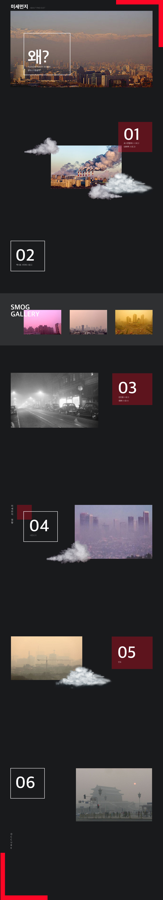

미세먼지와 황사는 발생지 부터가 다릅니다. 미세먼지는 인간이 만들어낸
공장이나 자동차 등에서 나오는 오염물질입니다.미세먼지는 눈에 보이지 않을 만큼
매우 작으며 대기 중에 머물러 있습니다.
멕시코시티 당국은 이날 오존 경보가 사흘째 발령됨에 따라 번호판 끝 번호를 기준으로 일부 차량에 대해
운행을 제한하고 시민들이 지하철이나 버스 등 대중교통수단을 이용할 것을 권고했다.
시 당국은 차량 운행 제한에 따른 불편을 줄이기 위해 이날 정오부터 지하철과 버스 등 대중교통을 무료로
운행하기 시작했다. 시 당국은 또 오존 수준이 허용치의 두 배 가까이 치솟음에 따라 주민들에게 야외활동을
자제할 것을 당부했다.
